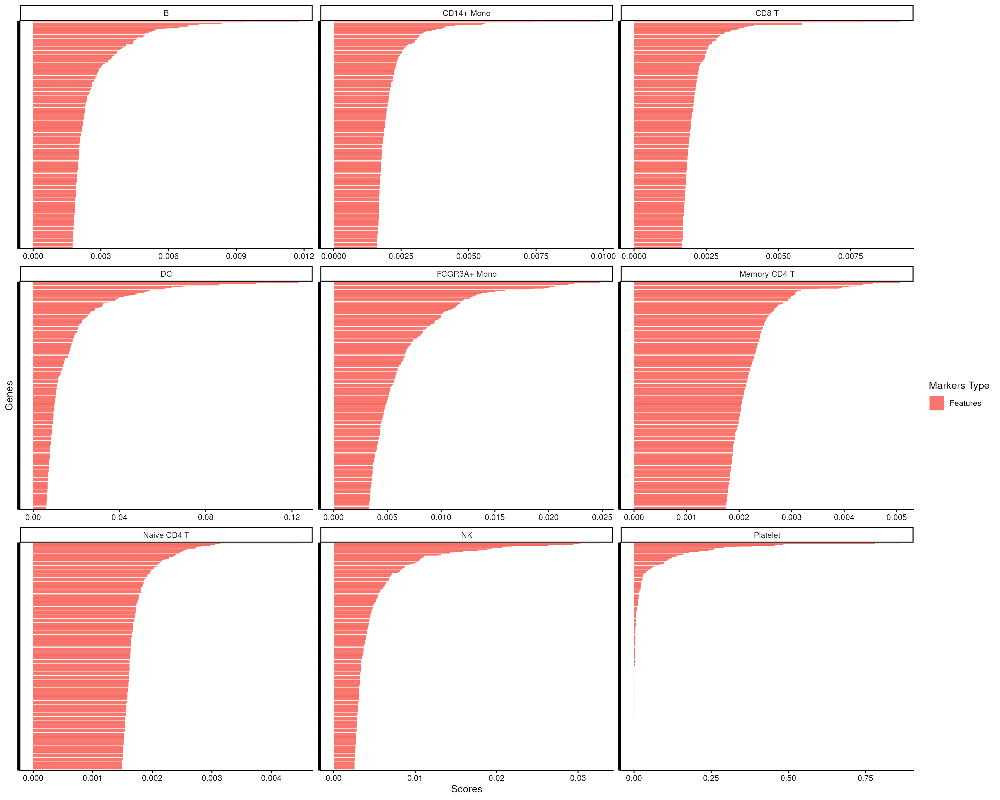
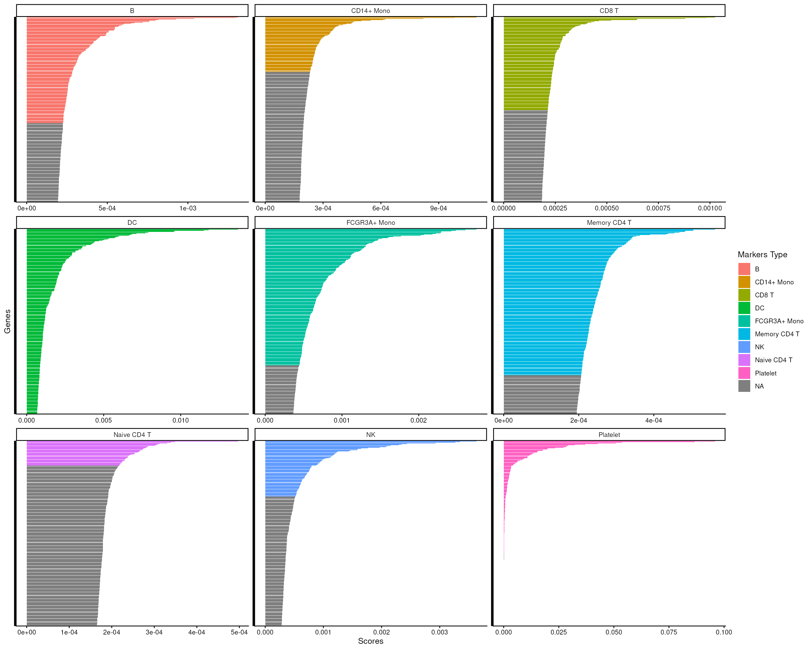
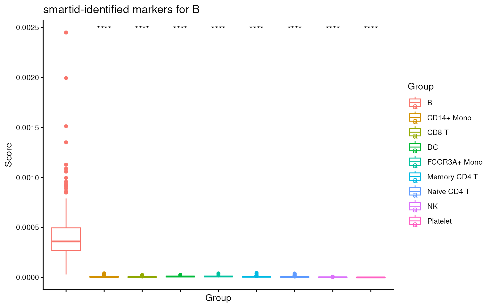
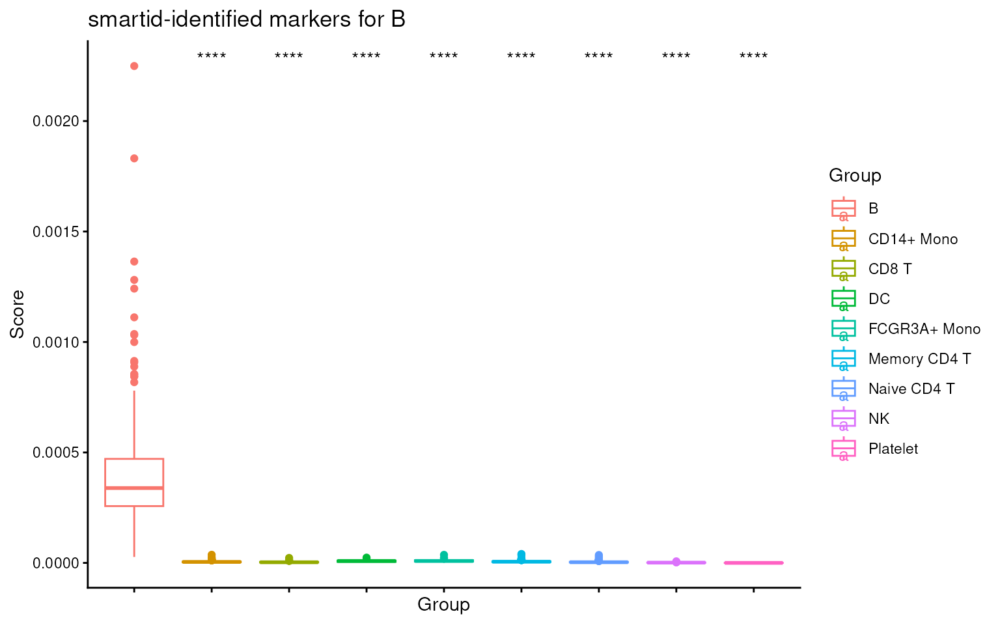
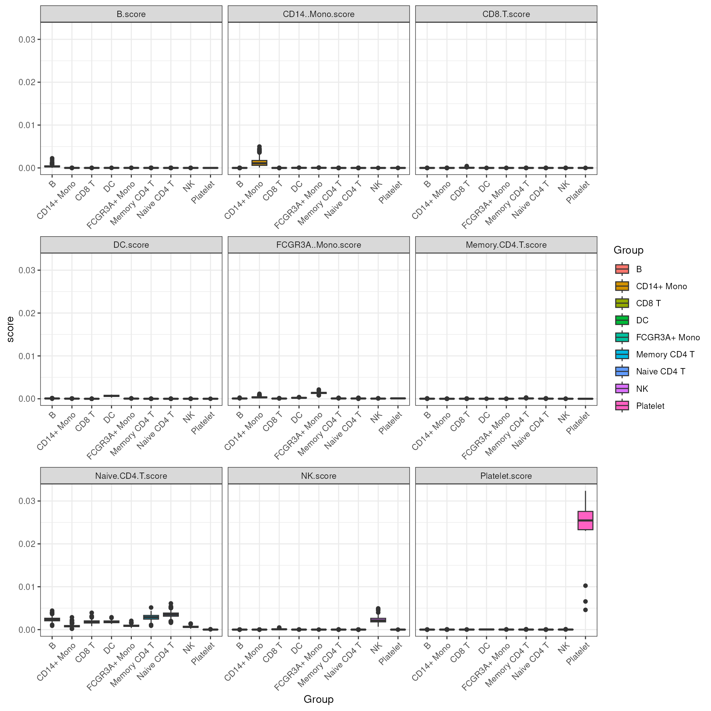

smartid: Identify markers for rare populations in single-cell RNA-seq data using TF-IDF-based approach and EM algorithm
Jinjin Chen
Bioinformatics Division, Walter and Eliza Hall Institute of Medical Research, Parkville, VIC 3052, AustraliaDepartment of Medical Biology, University of Melbourne, Parkville, VIC 3010, Australiachen.j@wehi.edu.au
Chin Wee Tan
Bioinformatics Division, Walter and Eliza Hall Institute of Medical Research, Parkville, VIC 3052, AustraliaDepartment of Medical Biology, University of Melbourne, Parkville, VIC 3010, Australiacwtan@wehi.edu.au
21 Nov 2025
Source:vignettes/workshop_smartid_casestudy.Rmd
workshop_smartid_casestudy.RmdIntroduction
smartid
smartid is a package that enables automated selection of
class specific signature genes, especially for rare population. This
package is developed for generating lists of specific signature genes
based on Term Frequency-Inverse Document Frequency
(TF-IDF) modified methods and expectation maximization
(EM) for labeled data. It can also be used as a new gene-set scoring
method or data transformation method for un-labeled data. Multiple
visualization functions are implemented in this package.
Installation
smartid R package can be installed from Bioconductor or
GitHub.
The most updated version of smartid is hosted on GitHub
and can be installed using devtools::install_github()
function provided by devtools.
if (!requireNamespace("BiocManager", quietly = TRUE)) {
install.packages("BiocManager")
}
if (!requireNamespace("smartid", quietly = TRUE)) {
BiocManager::install("smartid")
}Load Example Data
To demonstrate the usage of smartid, we will use the
pbmc3k.final data processed by Seurat from 10X
Genomics as an example. This data is a single-cell RNA-seq data of
2,638 PBMCs from a healthy donor, consisting of 9 cell types.
The data is a SingleCellExperiment object, containing
the raw counts and Seurat processed log-transformed counts
of the scRNA-seq data.
library(smartid)
library(SummarizedExperiment)
#> Loading required package: MatrixGenerics
#> Loading required package: matrixStats
#>
#> Attaching package: 'MatrixGenerics'
#> The following objects are masked from 'package:matrixStats':
#>
#> colAlls, colAnyNAs, colAnys, colAvgsPerRowSet, colCollapse,
#> colCounts, colCummaxs, colCummins, colCumprods, colCumsums,
#> colDiffs, colIQRDiffs, colIQRs, colLogSumExps, colMadDiffs,
#> colMads, colMaxs, colMeans2, colMedians, colMins, colOrderStats,
#> colProds, colQuantiles, colRanges, colRanks, colSdDiffs, colSds,
#> colSums2, colTabulates, colVarDiffs, colVars, colWeightedMads,
#> colWeightedMeans, colWeightedMedians, colWeightedSds,
#> colWeightedVars, rowAlls, rowAnyNAs, rowAnys, rowAvgsPerColSet,
#> rowCollapse, rowCounts, rowCummaxs, rowCummins, rowCumprods,
#> rowCumsums, rowDiffs, rowIQRDiffs, rowIQRs, rowLogSumExps,
#> rowMadDiffs, rowMads, rowMaxs, rowMeans2, rowMedians, rowMins,
#> rowOrderStats, rowProds, rowQuantiles, rowRanges, rowRanks,
#> rowSdDiffs, rowSds, rowSums2, rowTabulates, rowVarDiffs, rowVars,
#> rowWeightedMads, rowWeightedMeans, rowWeightedMedians,
#> rowWeightedSds, rowWeightedVars
#> Loading required package: GenomicRanges
#> Loading required package: stats4
#> Loading required package: BiocGenerics
#> Loading required package: generics
#>
#> Attaching package: 'generics'
#> The following objects are masked from 'package:base':
#>
#> as.difftime, as.factor, as.ordered, intersect, is.element, setdiff,
#> setequal, union
#>
#> Attaching package: 'BiocGenerics'
#> The following objects are masked from 'package:stats':
#>
#> IQR, mad, sd, var, xtabs
#> The following objects are masked from 'package:base':
#>
#> anyDuplicated, aperm, append, as.data.frame, basename, cbind,
#> colnames, dirname, do.call, duplicated, eval, evalq, Filter, Find,
#> get, grep, grepl, is.unsorted, lapply, Map, mapply, match, mget,
#> order, paste, pmax, pmax.int, pmin, pmin.int, Position, rank,
#> rbind, Reduce, rownames, sapply, saveRDS, table, tapply, unique,
#> unsplit, which.max, which.min
#> Loading required package: S4Vectors
#>
#> Attaching package: 'S4Vectors'
#> The following object is masked from 'package:utils':
#>
#> findMatches
#> The following objects are masked from 'package:base':
#>
#> expand.grid, I, unname
#> Loading required package: IRanges
#> Loading required package: Seqinfo
#> Loading required package: Biobase
#> Welcome to Bioconductor
#>
#> Vignettes contain introductory material; view with
#> 'browseVignettes()'. To cite Bioconductor, see
#> 'citation("Biobase")', and for packages 'citation("pkgname")'.
#>
#> Attaching package: 'Biobase'
#> The following object is masked from 'package:MatrixGenerics':
#>
#> rowMedians
#> The following objects are masked from 'package:matrixStats':
#>
#> anyMissing, rowMedians
library(ggplot2)
library(scater)
#> Loading required package: SingleCellExperiment
#> Loading required package: scuttle
# Load pre-processed data from package
sce <- readRDS(
system.file("extdata", "pbmc3k.final.rda",
package = "MarkerIdentificationWorkflow")
)
table(sce$seurat_annotations)
#>
#> Naive CD4 T Memory CD4 T CD14+ Mono B CD8 T FCGR3A+ Mono
#> 697 483 480 344 271 162
#> NK DC Platelet
#> 155 32 14Identify Markers
Score Samples
To identify markers, we will use the cal_score()
function to calculate the score for each feature in each sample. The
score can be composed of 3 terms: TF (term/feature frequency), IDF
(inverse document/cell frequency) and IAE (inverse average expression of
features). Each term has a couple of available choices with different
formats to suit labeled or un-labeled data.
Note: smartid provides a flexible framework to
calculate the score, with different TF, IDF and IAE methods
available. Users can use function
idf_iae_methods() to see available methods for IDF/IAE
term. More details of each term can be seen in help page of each
function, e.g. ?idf.
## show available methods
idf_iae_methods()
#> unlabel HDBSCAN label IGM unlabel max
#> "hdb" "igm" "m"
#> null label probability label relative frequency
#> "null" "prob" "rf"
#> unlabel SD unlabel standard
#> "sd" "standard"Here we use the default methods for demonstration:
logtf for TF, prob for IDF and IAE.
An advantage of smartid is that it can start with raw
counts data, with no need for pre-processed data. And the scoring is
quite fast.
# factor the cell types
sce$Group <- factor(as.character(sce$seurat_annotations))
## score
sce <- cal_score(
sce,
tf = "logtf",
idf = "prob",
iae = "prob",
par.idf = list(label = "Group"),
par.iae = list(label = "Group")
)
## score and tf,idf,iae all saved
assays(sce)
#> List of length 4
#> names(4): counts logcounts scaledata score
names(metadata(sce))
#> [1] "tf" "idf" "iae"Scale and Transform Score
Scaling is then needed to find the markers specific to the
group/class, however, standard scaling might fail due to the rare
populations. Here smartid uses a special scaling strategy
scale_mgm(), which can scale imbalanced data by given
group/class labels.
By doing this, we can avoid the bias towards features with larger numerical ranges during feature selection.
The scale method is depicted as below:
The mean of the scaled score for gene across all cells in class was estimated as , then the importance of it was obtained by calculating the differences between the . For each class, the original importances of all genes were transformed using a softmax transformation function to produce the transformed importances ${SI_{i,k}}$.
This normalized exponential transformation constrained the importance within the range [0,1] and summed to 1.
## scale and transform score
top_m <- top_markers(
data = sce,
label = "Group",
n = Inf # set Inf to get all features processed score
)
top_m
#> # A tibble: 123,426 × 3
#> # Groups: .dot [9]
#> .dot Genes Scores
#> <chr> <chr> <dbl>
#> 1 B MS4A1 0.00131
#> 2 B CD79B 0.00129
#> 3 B CD37 0.00104
#> 4 B CD79A 0.000927
#> 5 B BANK1 0.000815
#> 6 B HVCN1 0.000800
#> 7 B VPREB3 0.000761
#> 8 B TCL1A 0.000760
#> 9 B SNHG7 0.000719
#> 10 B FCER2 0.000669
#> # ℹ 123,416 more rowsThe top n features for each group will be ordered and listed in
top_m. smartid provides easy-to-use functions
to visualize top feature scores in each group.
score_barplot(
top_markers = top_m,
column = ".dot",
n = 300
) +
theme(axis.text.y = element_blank())
Select Markers
We can see that there is a clear change point within the top 500 features for each cell type, indicating the potential markers cutoff for each cell type.
To automate the selection of markers, we can use the
markers_mclust() function to select the markers for each
cell type.
The importance for each cell type will be modelled as a mixture of Gaussian distributions (GMM). The component with highest will be considered as the density function of the marker genes, and the genes with probability over the threshold (0.99 by default) will be selected as final marker genes for that cell type.
smartid also allows to plot the mixture distribution plot after EM to visualize the markers selection, which will slightly increase the running time.
## select markers
set.seed(123)
m_ls_smartid <- markers_mclust(
top_markers = top_m,
column = ".dot",
method = "max.one",
plot = TRUE # set FALSE to not plot the mixture distribution plot
)


lengths(m_ls_smartid)
#> B CD14+ Mono CD8 T DC FCGR3A+ Mono Memory CD4 T
#> 172 89 151 557 221 237
#> NK Naive CD4 T Platelet
#> 90 40 179We can then visualize how well the markers are separated from the rest of the features for each cell type.
score_barplot(
top_markers = top_m,
column = ".dot",
f_list = m_ls_smartid,
n = 300
) +
theme(axis.text.y = element_blank())
Gene-set Scoring
To validate the selected markers for the target cell type, we can
easily use the ova_score_boxplot() function in
smartid to visualize the overallscore of the marker list
across cell types.
## visualize score for cell type 1 across cell types
ova_score_boxplot(
sce@assays@data$score,
features = m_ls_smartid[[1]],
ref.group = names(m_ls_smartid)[1],
label = sce$Group
) +
ggtitle(sprintf("smartid-identified markers for %s", names(m_ls_smartid)[1]))
#> Warning in gs_score_init(data, features = features): Feature HLA.DOB is not in score!
#> Feature RP11.693J15.5 is not in score!
#> Feature RP5.887A10.1 is not in score!
#> Feature RP1.313I6.12 is not in score!
#> Feature CTC.228N24.3 is not in score!
#> Feature RP11.164H13.1 is not in score!
#> Feature RP13.188A5.1 is not in score!
#> Feature RP11.16E12.2 is not in score!
#> Feature CTA.250D10.23 is not in score!
#> Feature RP11.428G5.5 is not in score!
#> Feature RP11.727F15.9 is not in score!
#> Feature RP11.452F19.3 is not in score!
#> Feature RP11.325F22.2 is not in score!
#> Feature RP11.861A13.4 is not in score!
#> Feature TAPT1.AS1 is not in score!
We can see that the score for the target cell type is significantly higher than the others, indicating the markers are indeed specific to the target cell type.
As we can notice, there are some warnings about the missing Features
in the score calculation. This is because smartid will convert the
feature names to valid R variable names, which will replace the
- with . in the feature names. Thus, the
feature names in the score matrix are not exactly the same as the
feature names in the SingleCellExperiment object.
To avoid this, we can either convert the feature names of the
SingleCellExperiment object to valid R variable names, or
convert the feature names of the marker list back to the original
feature names before scoring.
# ## convert feature names back to original feature names
# m_ls_smartid <- lapply(m_ls_smartid, function(x) sub("\\.", "-", x))
## convert feature names of the score matrix to valid R variable names
rownames(sce@assays@data$score) <- make.names(rownames(sce@assays@data$score))
## visualize score for cell type 1 across cell types
ova_score_boxplot(
sce@assays@data$score,
features = m_ls_smartid[[1]],
ref.group = names(m_ls_smartid)[1],
label = sce$Group
) +
ggtitle(sprintf("smartid-identified markers for %s", names(m_ls_smartid)[1]))
Now we can see no more warnings about the missing Features this time.
smartid also provides a simple way to calculate the
overall score for cell type marker lists.
By using the gs_score() function in
smartid, we can calculate the overall score for each cell
type marker list in one single step.
The score for each cell and each cell type marker list will be saved
in the colData of the SingleCellExperiment object for easy
access, with the suffix of ‘score’ following the cell type name.
## score gene-set
sce <- gs_score(
data = sce,
features = m_ls_smartid,
slot = "score",
suffix = "score"
)
#> Warning in gs_score_init(score = data, features = features): Feature HLA.DOB is not in score!
#> Feature RP11.693J15.5 is not in score!
#> Feature RP5.887A10.1 is not in score!
#> Feature RP1.313I6.12 is not in score!
#> Feature CTC.228N24.3 is not in score!
#> Feature RP11.164H13.1 is not in score!
#> Feature RP13.188A5.1 is not in score!
#> Feature RP11.16E12.2 is not in score!
#> Feature CTA.250D10.23 is not in score!
#> Feature RP11.428G5.5 is not in score!
#> Feature RP11.727F15.9 is not in score!
#> Feature RP11.452F19.3 is not in score!
#> Feature RP11.325F22.2 is not in score!
#> Feature RP11.861A13.4 is not in score!
#> Feature TAPT1.AS1 is not in score!
#> Warning in gs_score_init(score = data, features = features): Feature RP11.295G20.2 is not in score!
#> Warning in gs_score_init(score = data, features = features): Feature RP11.539L10.2 is not in score!
#> Feature RP11.222K16.2 is not in score!
#> Feature TPT1.AS1 is not in score!
#> Feature A2M.AS1 is not in score!
#> Feature LL22NC03.75H12.2 is not in score!
#> Feature RP11.403I13.8 is not in score!
#> Feature RP11.383H13.1 is not in score!
#> Feature RP11.285F7.2 is not in score!
#> Feature RP11.305L7.1 is not in score!
#> Feature USP30.AS1 is not in score!
#> Feature RP11.445H22.3 is not in score!
#> Warning in gs_score_init(score = data, features = features): Feature HLA.DRB5 is not in score!
#> Feature HLA.DRB1 is not in score!
#> Feature HLA.DPB1 is not in score!
#> Feature HLA.DPA1 is not in score!
#> Feature HLA.DMA is not in score!
#> Feature HLA.DQA2 is not in score!
#> Feature HLA.DQA1 is not in score!
#> Feature HLA.DQB1 is not in score!
#> Feature HLA.DMB is not in score!
#> Feature HLA.DQB2 is not in score!
#> Feature HLA.DRA is not in score!
#> Feature NME1.NME2 is not in score!
#> Feature RP1.241P17.4 is not in score!
#> Feature HLA.DOA is not in score!
#> Feature CTA.29F11.1 is not in score!
#> Feature RP11.1143G9.4 is not in score!
#> Feature MT.ND5 is not in score!
#> Warning in gs_score_init(score = data, features = features): Feature RP11.290F20.3 is not in score!
#> Feature RP11.347P5.1 is not in score!
#> Feature RP11.362F19.1 is not in score!
#> Feature MT.CO2 is not in score!
#> Warning in gs_score_init(score = data, features = features): Feature ILF3.AS1 is not in score!
#> Feature CEBPZ.AS1 is not in score!
#> Feature RP11.1399P15.1 is not in score!
#> Feature RP11.403A21.2 is not in score!
#> Feature RP4.539M6.22 is not in score!
#> Feature GS1.251I9.4 is not in score!
#> Feature RP13.977J11.2 is not in score!
#> Feature RP11.936I5.1 is not in score!
#> Feature RP11.138A9.1 is not in score!
#> Feature RP11.44N11.2 is not in score!
#> Feature CTC.523E23.11 is not in score!
#> Warning in gs_score_init(score = data, features = features): Feature PRKCQ.AS1 is not in score!
#> Feature RP11.291B21.2 is not in score!
#> Warning in gs_score_init(score = data, features = features): Feature RP11.367G6.3 is not in score!
#> Feature CD27.AS1 is not in score!
#> Feature RP11.879F14.2 is not in score!
## saved score
colnames(colData(sce))
#> [1] "orig.ident" "nCount_RNA" "nFeature_RNA"
#> [4] "seurat_annotations" "percent.mt" "RNA_snn_res.0.5"
#> [7] "seurat_clusters" "ident" "Group"
#> [10] "B.score" "CD14+ Mono.score" "CD8 T.score"
#> [13] "DC.score" "FCGR3A+ Mono.score" "Memory CD4 T.score"
#> [16] "NK.score" "Naive CD4 T.score" "Platelet.score"We can then visualize all the scores across all cell types, see how well it can distinguish the target cell type from all others.
It’s evident that the score can sufficiently separate the target cell type from all others.
## visualize score across cell types
as.data.frame(colData(sce)) |>
tidyr::pivot_longer("B.score":"Platelet.score",
names_to = "group markers",
values_to = "score"
) |>
ggplot(aes(x = Group, y = score, fill = Group)) +
geom_boxplot() +
facet_wrap(~`group markers`, scales = "free_y") +
theme_bw() +
theme(axis.text.x = element_text(angle = 45, hjust = 1))
SessionInfo
sessionInfo()
#> R Under development (unstable) (2025-11-16 r89026)
#> Platform: x86_64-pc-linux-gnu
#> Running under: Ubuntu 24.04.3 LTS
#>
#> Matrix products: default
#> BLAS: /usr/lib/x86_64-linux-gnu/openblas-pthread/libblas.so.3
#> LAPACK: /usr/lib/x86_64-linux-gnu/openblas-pthread/libopenblasp-r0.3.26.so; LAPACK version 3.12.0
#>
#> locale:
#> [1] LC_CTYPE=en_US.UTF-8 LC_NUMERIC=C
#> [3] LC_TIME=en_US.UTF-8 LC_COLLATE=en_US.UTF-8
#> [5] LC_MONETARY=en_US.UTF-8 LC_MESSAGES=en_US.UTF-8
#> [7] LC_PAPER=en_US.UTF-8 LC_NAME=C
#> [9] LC_ADDRESS=C LC_TELEPHONE=C
#> [11] LC_MEASUREMENT=en_US.UTF-8 LC_IDENTIFICATION=C
#>
#> time zone: Etc/UTC
#> tzcode source: system (glibc)
#>
#> attached base packages:
#> [1] stats4 stats graphics grDevices utils datasets methods
#> [8] base
#>
#> other attached packages:
#> [1] scater_1.39.0 scuttle_1.21.0
#> [3] SingleCellExperiment_1.33.0 ggplot2_4.0.1
#> [5] SummarizedExperiment_1.41.0 Biobase_2.71.0
#> [7] GenomicRanges_1.63.0 Seqinfo_1.1.0
#> [9] IRanges_2.45.0 S4Vectors_0.49.0
#> [11] BiocGenerics_0.57.0 generics_0.1.4
#> [13] MatrixGenerics_1.23.0 matrixStats_1.5.0
#> [15] smartid_1.7.0 BiocStyle_2.39.0
#>
#> loaded via a namespace (and not attached):
#> [1] tidyselect_1.2.1 viridisLite_0.4.2 dplyr_1.1.4
#> [4] vipor_0.4.7 farver_2.1.2 viridis_0.6.5
#> [7] S7_0.2.1 fastmap_1.2.0 janeaustenr_1.0.0
#> [10] digest_0.6.39 rsvd_1.0.5 lifecycle_1.0.4
#> [13] tokenizers_0.3.0 magrittr_2.0.4 compiler_4.6.0
#> [16] rlang_1.1.6 sass_0.4.10 tools_4.6.0
#> [19] utf8_1.2.6 yaml_2.3.10 tidytext_0.4.3
#> [22] ggsignif_0.6.4 knitr_1.50 S4Arrays_1.11.0
#> [25] labeling_0.4.3 htmlwidgets_1.6.4 mclust_6.1.2
#> [28] DelayedArray_0.37.0 RColorBrewer_1.1-3 abind_1.4-8
#> [31] BiocParallel_1.45.0 withr_3.0.2 purrr_1.2.0
#> [34] desc_1.4.3 grid_4.6.0 ggpubr_0.6.2
#> [37] beachmat_2.27.0 scales_1.4.0 cli_3.6.5
#> [40] rmarkdown_2.30 ragg_1.5.0 ggbeeswarm_0.7.2
#> [43] cachem_1.1.0 parallel_4.6.0 BiocManager_1.30.27
#> [46] XVector_0.51.0 vctrs_0.6.5 Matrix_1.7-4
#> [49] carData_3.0-5 jsonlite_2.0.0 car_3.1-3
#> [52] bookdown_0.45 BiocSingular_1.27.1 BiocNeighbors_2.5.0
#> [55] rstatix_0.7.3 ggrepel_0.9.6 Formula_1.2-5
#> [58] irlba_2.3.5.1 beeswarm_0.4.0 systemfonts_1.3.1
#> [61] jquerylib_0.1.4 tidyr_1.3.1 glue_1.8.0
#> [64] pkgdown_2.2.0 codetools_0.2-20 stringi_1.8.7
#> [67] gtable_0.3.6 ScaledMatrix_1.19.0 tibble_3.3.0
#> [70] pillar_1.11.1 htmltools_0.5.8.1 R6_2.6.1
#> [73] textshaping_1.0.4 sparseMatrixStats_1.23.0 evaluate_1.0.5
#> [76] lattice_0.22-7 backports_1.5.0 SnowballC_0.7.1
#> [79] broom_1.0.10 bslib_0.9.0 Rcpp_1.1.0
#> [82] gridExtra_2.3 SparseArray_1.11.2 xfun_0.54
#> [85] fs_1.6.6 pkgconfig_2.0.3